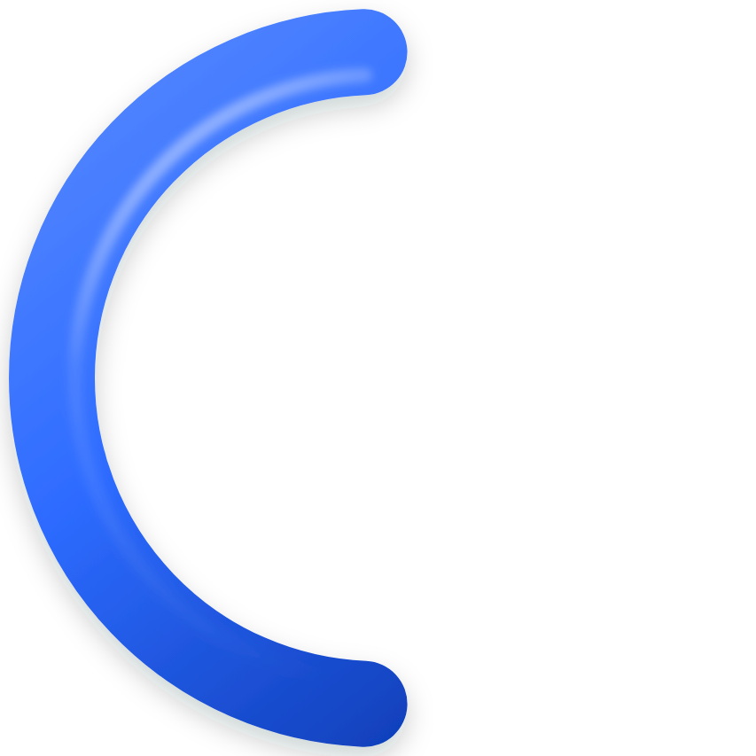
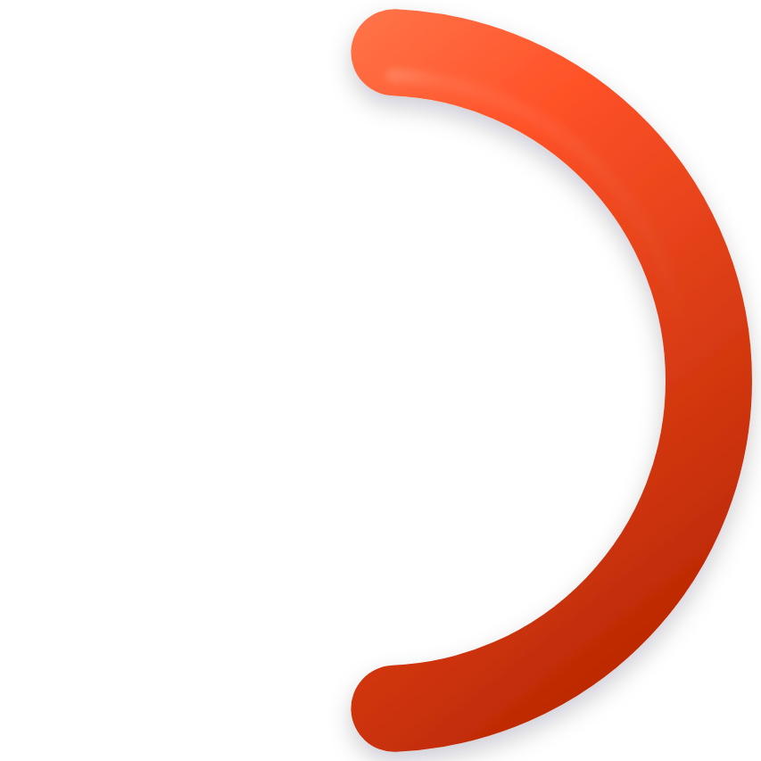
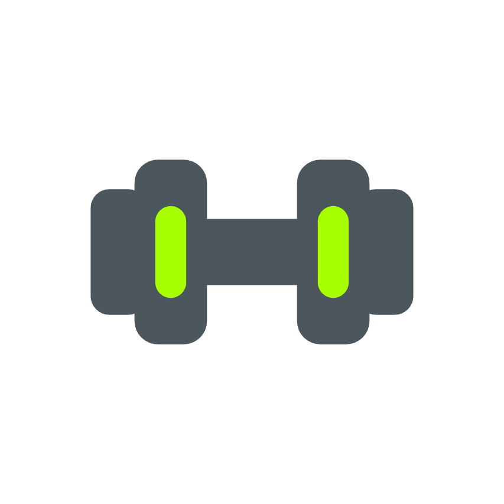

UNIO
This is what your partner sees.
Your ring, your initials, and your side of anything you and your partner both appear in.
Sex, age and height set your starting weights. They live on their own page.
Off hides the exercise name, muscle figure, sets and up-next from their live view and timeline. They still see that you're training, for how long, and your effort score, so who worked hardest never depends on showing what you did.
You both go back to training alone, and neither of you can see the other's workouts, weigh-ins or photos any more. Nothing you have logged is deleted, and either of you can pair again with a new code.
This also ends it for your partner.
Optional. Anything the goal above does not say on its own.
Either of you can change this. It applies to you both.
Minutes. The plan is built to fit it: fewer sets when the time is short, more when there is room.
Used for workouts you build yourself. A generated plan budgets its own rest per exercise, because a heavy squat and a lateral raise do not want the same wait.
The figure on the session screen says something now and then: after a record, when a rest is running long, between lifts. He is quiet most sets. Off here means never, on this phone.
When a workout moves to the next lift, a card shows the kit it needs for three seconds and then goes. The equipment is always there to tap on the plan and on the session screen, whether this is on or off.
Every generated workout opens with a few minutes of timed dynamic moves and closes with a few holds for what you worked. Off here means never; you can also skip either one on the day.
Earned by doing the thing, not by opening the app. What is still locked stays a surprise.
We look at every report within a day, and the person is not told who reported them.
You are not paired with anyone right now.
To report one video in particular, tap the flag while it is playing. You can also email mo.shareef@creativelab1.com.
Blocking unpairs you, stops anything more arriving, and stops them pairing with you again. They are not told, and you can undo it here.
You are not paired with anyone right now.
Signed in as .
Wipes every workout, weigh-in, exercise log, saved plan and photo. Your account, your partner, your settings and the milestones you have already earned stay.
This permanently erases your profile, workouts, weigh-ins, photos and rank. It cannot be undone, and it unpairs your partner.
Loading.